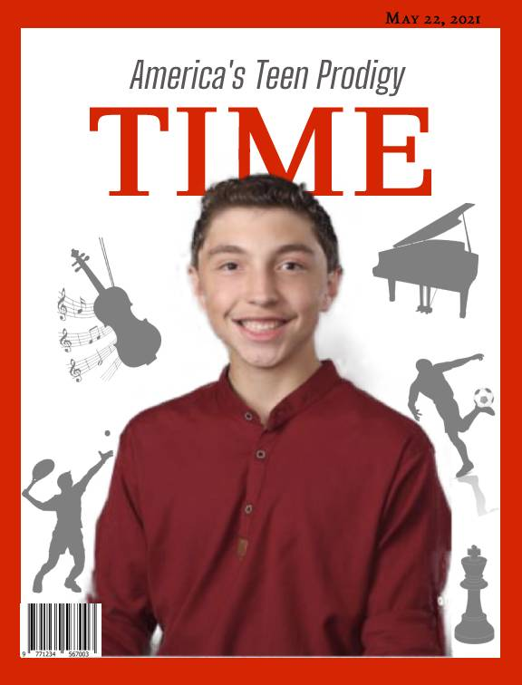

About Me
WHO AM I? MAN, MYTH, OR TEEN PRODIGY
I am always searching for new challenges in my academics, music, and sports. And appreciate every obstacle thrown my way, as I know I will be stronger for it.
My name is Johnny Raicu and I live in Chicago’s suburbs. I am a dedicated scholar (class of 2024) currently attending Glenbrook South High School in Glenview. I strive to strengthen my skills and interests by always pursuing new challenges. Outside of my academic life, I enjoy playing sports with my family and friends, traveling to magical places, and honing my musical skills on the violin and piano. My other interests include chess, card magic, creative writing, and digital graphic design. My most recent endeavor has been mastering the art of website design. Enjoy my website with vignettes of my life!